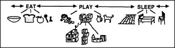

In any actual child's mind, the urge to Play competes with other demanding urges, such as Eat and Sleep. What happens if another agent wrests control from Play, and what happens to the agents Play controlled?
Suppose that our child is called away, no matter whether by someone else or by an internal urge like Sleep. What happens to the processes remaining active in the mind? One part of the child may still want to play, while another part wants to sleep. Perhaps the child will knock the tower down with a sudden, vengeful kick. What does it mean when children make such scenes? Is it that inner discipline breaks down to cause those savage acts? Not necessarily. Those childish acts might still make sense in other ways.
Smashing takes so little time that Wrecker, freed from Play's constraint, need persist for only one more kick to gain the satisfaction of a final crash.
Though childish violence might seem senseless by itself, it serves to communicate frustration at the loss of goal. Even if the parent scolds, that just confirms how well the message was transmitted and received. Destructive acts can serve constructive goals by leaving fewer problems to be solved. That kick may leave a mess outside, yet tidy up the child's mind.
When children smash their treasured toys, we shouldn't ask for the reason why — since no such act has a single cause. Besides, it isn't true in a human mind that, when Sleep starts, then Play must quit and all its agents have to cease. A real child can go to bed — yet still build towers in its head.